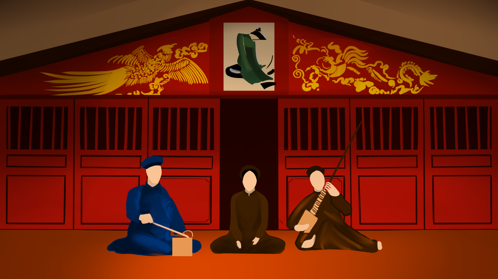
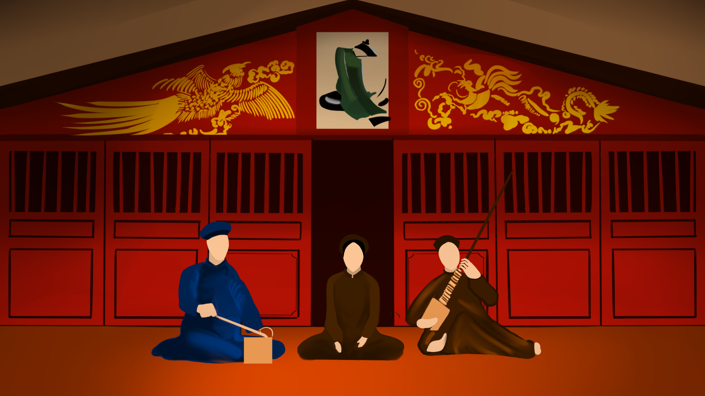

CA TRÙ - VIETNAMESE CHAMBER MUSIC
Ca trù (Vietnamese ceremonial singing) is a traditional art form that originated in northern Vietnam. It involves a female vocalist who sings poetic lyrics accompanied by a dan day (a long-necked lute) and trống (drums), with the performer often using wooden clappers for rhythm. Ca trù was traditionally performed in royal courts, temples, and private gatherings, focusing on themes of love, morality, and social issues. Known for its intricate vocal techniques and sophisticated rhythms, ca trù was recognized as a UNESCO Intangible Cultural Heritage.